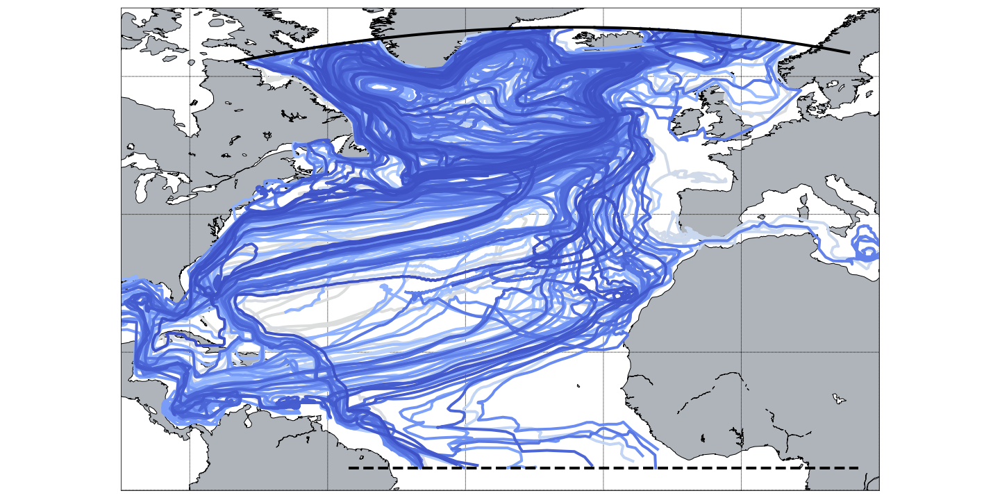
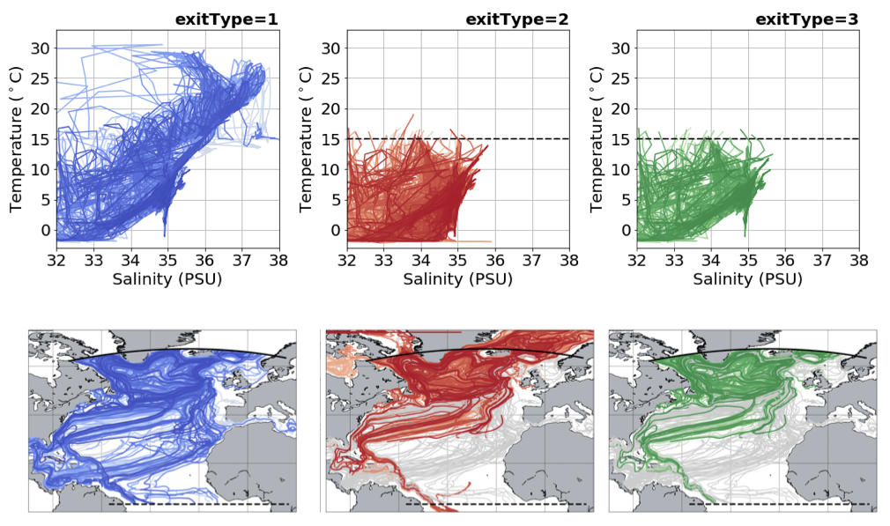
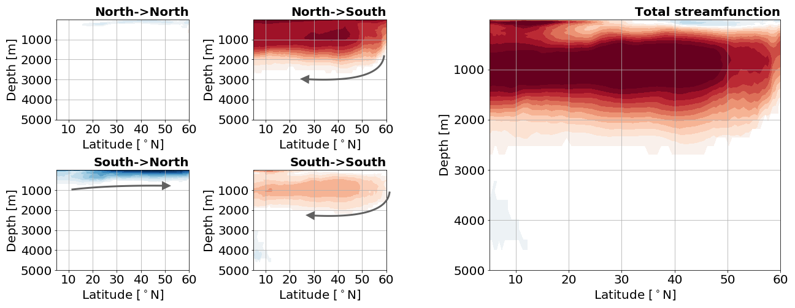
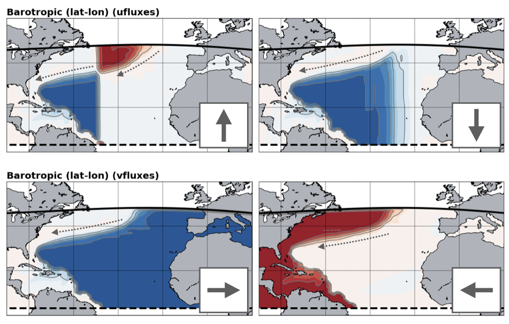
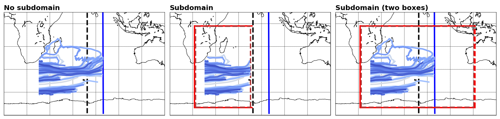
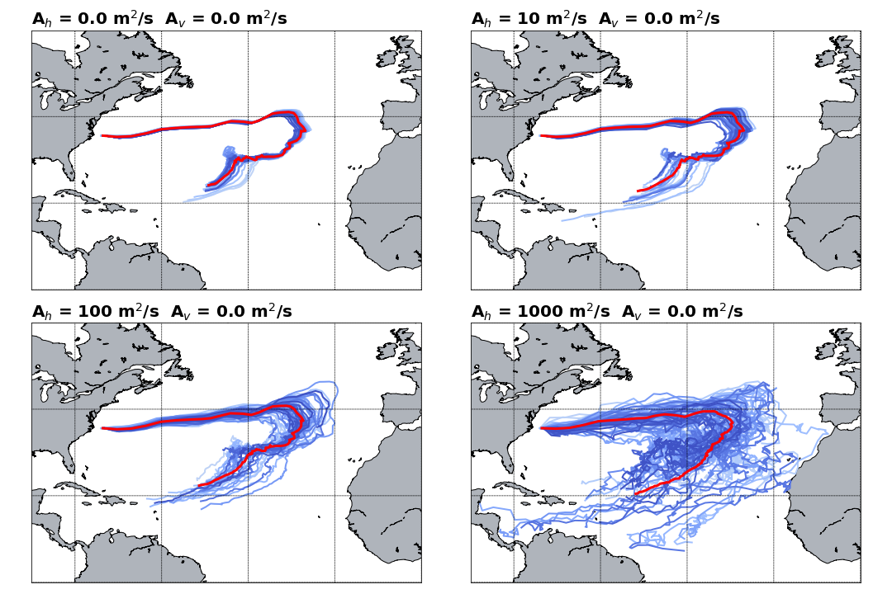

The NEMO data is defined on the same grid as the TRACMASS grid. Therefore, there is no need to interpolate velocities or tracer on the TRACMASS grid. The default setup of this project initialises trajectories in the North Atlantic Ocean only for southward fluxes (marked in black in the figure). The seeding takes place every month (24 seeding steps) and one trajectory is initialised in the location. Trajectories are terminated based on geographical conditions (solid and dashed black lines), the maximum time for trajectories is 200 years.

TRACMASS features: initialisation with tracermin0 and tracermax0
Trajectories can be initialised using a tracer value criteria by defining the minimum (tracermin0) and the maximum (tracermax0) value of the tracers. In this example, only waters with temperatures between and salinity between 34.9-35.0 PSU are selected (red trajectories). This reduces the number of trajectories that are started compared to the default case (blue trajectories). This is seen better on a T-S diagram.

TRACMASS features: killing zones II (exitType=2 and exitType=3)
Trajectories can be terminated using different conditions set by exitType. By setting exitType to one, trajectories are terminated based on a geographical condition (solid and dashed black lines). By setting exitType to two, a value of tracer is used to terminate trajectories. This is harder to see in the geographical projection of trajectories, but it is easily seen in the tracer space. In the example below we impose a killing zone along the isotherm (red trajectories). exitType=3 is a combination of both trajectory and tracer conditions (green trajectories).

TRACMASS features: stream functions II (psiyz - meridional)
If stream function calculation (l_psi) is activated, a stream function will be calculated to each of the killing zones. This way one is able to separate the total Lagrangian meridional stream function into the different components depending of the killing zone. All the stream functions showed in the figure below are computed offline and with dirpsi equal to minus one. Trajectories are starting both in the northern and southern boundary.

The Lagrangian stream function may differ from the Eulerian stream function if the number of trajectories is not large enough.
TRACMASS features: stream functions II (psixy - barotropic / xyflux / dirpsi)
The barotropic streamfunction can be computed using uflux-es (xyflux =1) where the integration is done along the j meridional indexes; or using vflux-es (xyflux =2) where the integration is done along i zonal indexes. The resulting stream function may differ depending on the choice of xyflux and dirpsi. The figure below represents four different barotropic stream fucntions computed from trajectories that started in the north boundary (black solid line) and end in the south boundary (black dashed line). The arrows represent the direction of integration (dirpsi).
For this setup where there are land boundaries in the zonal direction is recommended to use xyflux = 2. The choice of dirpsi does not play a difference in this case as land points can be found in both sied. For xyflux = 1 however; the stream function calculation creates artificial cells as a result of the open boundary in the meridional direction.

TRACMASS features: use of subdomains (l_subdom)
Activating a subdomain (l_subdom) is useful especially for high resolution data and when there is no need to read the whole domain. The figure below shows an example of the use of a subdomain. The default case describes a group of trajectories that starts at the surface in the area near cape Aghulas. A geographical condition is imposed to terminate the trajectories (solid blue line). The dashed black line represents the limit the original domain (the setup includes zonal cyclic boundaries iperio=1). The centre panel represents a regular box (imindom<imaxdom) and the right one a split box (imaxdom<imindom). The subdomain is represented by the red solid line while the new killing zones are represented by the red dashed lines.

TRACMASS features: diffusion (l_diffusion)
Random displacement can be introduced in TRACMASS by activating diffusion (l_diffusion). This can be helpful if the input data is too coarse to include some subgrid processes. The example below shows the evolution of hundred trajectories initialised in the same grid point in the North Atlantic. The red line represents the mean path of all trajectories. For simplicity this example only includes horizontal diffusion. For the default case the trajectories are quite coherent and little dispersion is observed, as the value of Ah increments the dispersion is more notorious.
